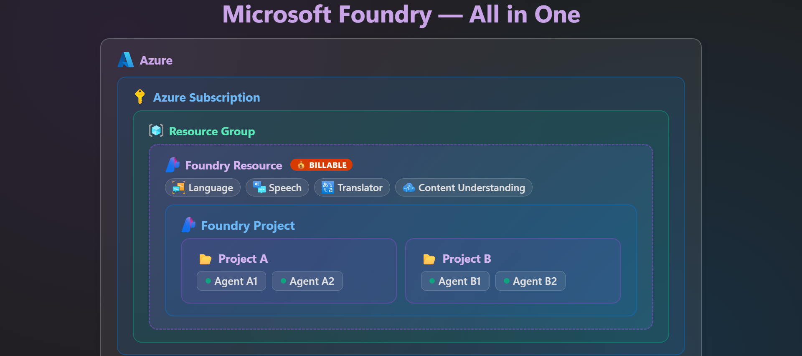

Get Started with Microsoft Foundry
Your AI Agent learning journey
Follow the four animations in order. Each one builds on the last — from understanding Foundry's structure to shipping an agent.
01
Foundation
Optional
Foundry Hub vs Project
See how hubs and projects organize your work, share resources, and set the boundaries for everything you build.
Start step 01 →
02

Orientation
Foundry New Experience
Tour the redesigned Microsoft Foundry experience and learn where the tools you need actually live.
Start step 02 →
03

Build
Model Deployment vs Agent
Understand the difference between deploying a raw model and composing an agent — and when to reach for each.
Start step 03 →
04
Ship
What Makes an Agent
Break down the anatomy of an AI agent — model, instructions, tools, and memory — and bring it all together.
Start step 04 →